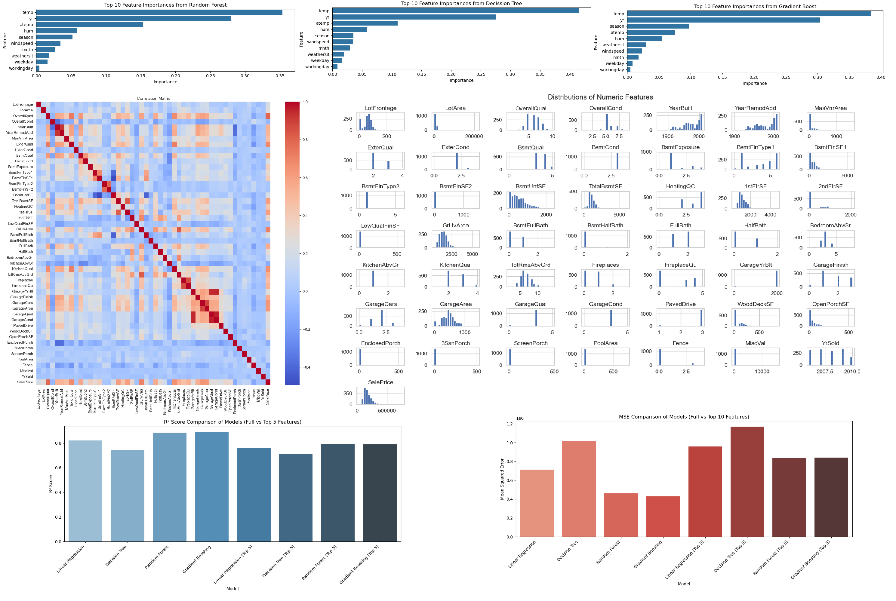

👨‍💼 About Me
I am an electronic engineer with 23 years of experience in telecommunications. I specialize in configuring, implementing, testing, and supporting complex solutions for major carriers. Over the last decade, I have transitioned into a Solution Architect, focusing on provisioning, charging control, and analytics while solving complex problems and leading technical teams with strong attention to detail.
My main goal is to deliver creative results that meet customer expectations and tackle challenges effectively. I can analyze client needs, review technical specs, define configurations, design solutions, plan projects, document testing procedures, and guide technical teams. I can also deploy solutions and integrate with third-party applications, facilitate go-live processes, and offer ongoing support.
As a Master’s candidate in Data Analytics at the University of Niagara Falls, I have significantly expanded my technical and analytical toolkit. My training has deepened my expertise in Python, Power BI, Tableau, SPSS, and SQL, as well as statistical modelling, data visualization, data warehousing, and machine learning. I am skilled in exploratory data analysis (EDA), regression analysis, predictive modelling, dashboard development, and leveraging data to generate actionable insights for business decision-making. Throughout my graduate studies, I have strengthened my abilities in data cleaning, hypothesis testing, advanced analytics, and the integration of multiple tools and platforms. These skills have been applied to real-world projects involving statistical inference, ETL processes and business intelligence. This blend of engineering experience and advanced data analytics empowers me to deliver end-to-end solutions, bridge the gap between business and technology, and add value to organizations in a data-driven world.
📊 Featured Projects
1. 🵠Spotify Data 2023 – Top Songs Analysis (SPSS)
Exploratory analysis of Spotify's top tracks in 2023 using SPSS and statistical correlation techniques.
🔗 View Details2. 🚦 Traffic Accident Prediction (Python)
Regression modelling to forecast traffic accident risk in Toronto using weather and location data.
🔗 View Details3. 📈 Sales Forecasting (Power BI)
Forecast sales performance, customers, and profitability using interactive visuals in Power BI.
🔗 View Details4. 🔋 Electric Vehicles Analysis (Python + Power BI)
Exploratory and statistical analysis of electric vehicle registrations using Python and Power BI. Includes regression models, data consistency validation by state, and growth trends over time.
🔗 View Details5. 🕵️‍♂️ LAPD Crime Data Analysis (Python)
Predictive and exploratory analysis of the Los Angeles Police Department Crime Dataset using Python. Includes EDA, feature engineering, demographic insights, spatial heatmaps, and Random Forest modeling to identify the key drivers of crime case solvability.
🔗 View Details6. 📊 Superstore Sales Analysis (Tableau)
An interactive business dashboard for the popular Superstore dataset, built with Tableau. Explore regional sales, profit trends, category breakdowns, and key KPIs through dynamic maps and charts. Two linked dashboards provide actionable insights for managers and analysts.
🔗 View Details7. 🌠Global Superstore Analysis (Tableau)
Advanced Tableau dashboards analyzing global sales, profits, customer segments, and trends in the Global Superstore dataset. Features regional performance, category analysis, and interactive insights for strategic business decisions.
🔗 View Details📊 Other interesting Projects
1. 🚲 Bicycle Store (SQL Analysis)
Database modelling and SQL analysis for a retail bicycle store.
🔗 View Details2. 🚌 Bus Scheduling Optimization (Python)
Optimization of bus resources for urban public transportation using LP and advanced modelling using Phyton Solvers.
🔗 View Details3. 📊 Sales Modeling & DAX (Power BI)
Descriptive analysis of sales data using Power BI and advanced DAX measures.
🔗 View Details4. 🌸 Iris Dataset Analysis (Python + Power BI)
Data exploration of the Iris dataset using Python preprocessing and Power BI dashboards.
🔗 View Details5. ğŸ 📉 Housing Prices & Bike Sharing (Python + Power BI)
End-to-end workflow using Python notebooks for preparation and prediction, paired with Power BI dashboards for housing prices and bike sharing.
🔗 View DetailsResume
🧪 Experience
Solution Architect – Hewlett Packard Enterprise (HPE)
May 2010 – Oct 2024 | Colombia
Led full-cycle solution design and delivery for telecommunications clients in Latin America and Canada. Specializing in provisioning systems, charging control, analytics solutions, and automated testing.
Technical Consultant – Indra
2008 – 2010 | Colombia
Implemented enterprise integration architecture (SOA)
System Analyst – Tigo
2005 – 2008 | Colombia
Designed mediation platforms and satellite applications for operational efficiency across telecom systems.
Developer – Hewlett Packard (HP)
2004 – 2005 | Colombia
Developing a third-party payment platform to reconcile mobile network events with content providers. It was built using scripting and Java J2EE framework, and it features a server core for recording events in a database and a graphical user interface (Swing GUI and HTML) for clients to interact with processed information
Developer – Proyectos Compartidos
2002 – 2004 | Colombia
Developing as part of the team, different routines in Mainframe’s banking using COBOL, scripting and Java using J2EE framework, using neuronal networks to forecast cash flow
🛠Skills
- Languages: Python, SQL, Java, C++, Shell
- Tools: SPSS, Tableau, Power BI, Jupyter, Git, Jenkins, Ansible
- Databases: Oracle, MySQL, Postgres, Vertica
- Methods: Regression, Clustering, Forecasting, Optimization
📠Education & Certifications
- Master in Data Analytics – University of Niagara Falls (2024–2026)
- Electronic Engineering – Universidad Nacional de Colombia (1996–2002)
- Project Management Specialist – Universidad Santo Tomás (2009–2010)
- Mobile Telecommunications Specialist – Universidad Distrital Francisco José de Caldas (2003–2004)
- SCRUM Fundamentals Certified – SCRUMstudy (2020)
- Certified SAFe® 6 Product Owner/Product Manager – Scaled Agile (2023)